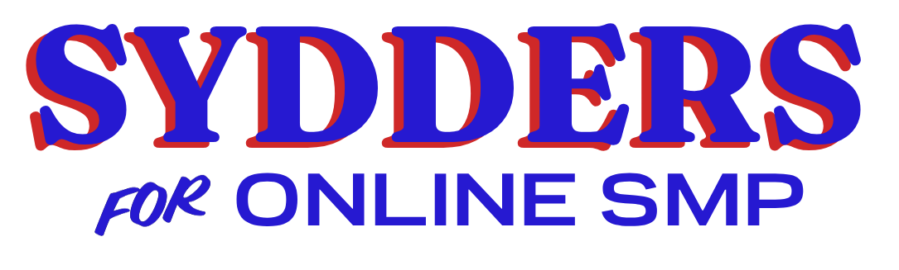

About Sydders
Sydders is a dedicated person in the Online SMP minecraft server. With an immense drive to be the mayor of the people, Sydders is ready to take on the large power of leading the server into a better, brighter future.
To the right is an informational video about Sydders and her campaign for mayor. It is dedicated to showing you, the people, why SyddersLMAO is the best candidate for mayor of the Online SMP. Please watch it and consider voting for Sydders in the upcoming election.
The Manifesto
1
I Love Pets
As mayor, i would ensure all pets are given protections and the law surrounding them will be ammended so that anyone harming any pets will be exiled.
2
Power to the People
Everyone loves having power... So lets give it to them !! Every person has the right to dictate their own rules on their property. This means if i get into power i will protect my people's rights on what they can and can't do on their land. This ensures people have power to govern themselves and their land they so lovingly spent their hard time and work on.
3
Free Flying
For all those who are unwinged (aka do not have an elytra), i will personally provide each and every one of you a personal elytra funded by the mayoral office. This ensures that everyone has a right to freedom of travel.
4
Safe Travel for All
No one likes dying, so if i become mayor i will ensure that everyone has safe travel to commonly visited areas. This means whether you're netherite mining, grinding xp, or just visiting a friend, you will not have to worry about your mortality.
5
The Server Jingle
I will personally oversee the creation of a jingle for the Online SMP. This means you can sing, dance, or put infront of your content a lovely jingle to remind you and your viewers of the Online SMP.